MQTT#
MQTT 是一种基于发布/订阅（Publish/Subscribe）模式的轻量级通讯协议，该协议构建于TCP/IP协议上。一些 WiFi 模块已经集成了 TCP 协议栈，所以只需要通过发送 AT 指令即可建立 TCP 连接。建立 TCP 连接后，发送数据包需要配合 MQTT 协议做一些处理，再通过 AT 指令让数据包通过 TCP 协议发送，即可实现 MQTT 通信，接收数据同理。除此之外，一些模块内部也直接支持MQTT AT指令，相比于只支持TCP AT的模块，可以免去写一些配合MQTT协议的代码这个步骤。开发板上的WiFi模块默认的固件版本支持通过AT指令配置TCP，UDP，UDP Lite，TCP-SSL，MQTT，详细的AT指令官方文档：:link:ISM43362
现在大部分的WiFi模块都支持MQTT AT指令（一些模块的默认固件可能不支持，需要去模块的官网下载相应固件烧录），本章节讲述如何通过MQTT AT指令来进行MQTT通信。
实验目的#
了解 MQTT 协议，感兴趣的同学可进一步了解如何实现 MQTT 协议
实现 MQTT 的 publish 和 subscribe 模式
准备工作#
已经搭建好的 MQTT 服务器（也可以使用mqtt或者emqx提供的公共服务器进行测试）
提前了解该wifi模块的AT指令（主要看与mqtt和wifi基本配置相关的AT指令）
硬件#
物联网实验箱
USB 数据线
软件#
CLion
STM32CubeMX
相关电路原理#
STM32 与 WiFi 模块的硬件连接
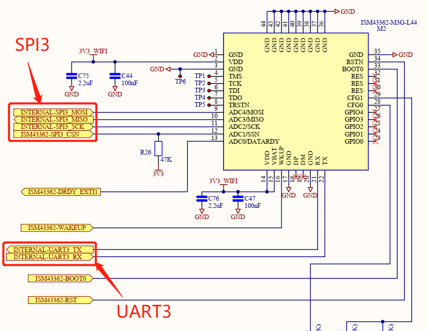
引脚定义与相关API#
引脚定义 跟wifi的tcp，http章节是一样的。
相关API
// wifi模块初始化，主要做的事情就是通过AT指令配置wifi模块 WIFI_StatusTypeDef WIFI_Init(WIFI_HandleTypeDef* hwifi)
// wifi模块连接wifi，同样是通过AT指令配置的 WIFI_StatusTypeDef WIFI_JoinNetwork(WIFI_HandleTypeDef* hwifi)
// 初始化wifi模块，使用MQTT协议，主要是配置发布/订阅主题等信息 WIFI_StatusTypeDef WIFI_MQTTClientInit(WIFI_HandleTypeDef* hwifi)
// stm32节点作为订阅者，接受发布者发送过来的数据 WIFI_StatusTypeDef WIFI_MQTTReceive(WIFI_HandleTypeDef* hwifi, char* message, uint16_t size)
// stm32节点作为发布者，向订阅者发送数据 WIFI_StatusTypeDef WIFI_MQTTPublish(WIFI_HandleTypeDef* hwifi, char* message, uint16_t sizeMessage)
实验步骤#
STM32CubeMX创建工程#
在前面的章节，我们都是用Star My project from ST Board来生成工程的，但在平时使用的时候，我们一般不用ST的开发板（太贵啦）或者使用自己绘制的开发板，这就需要我们根据自己的硬件来生成工程，本章节就演示如何用零开始新建一个工程。
选择Star My project from MCU，以特定的芯片来生成工程 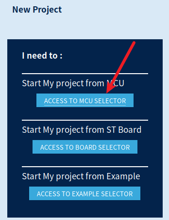
我们的开发板使用的芯片是STM32L475VGT6，搜索该芯片，选择并Start Project 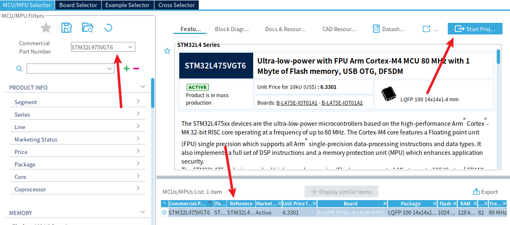
选择Debug方式为Serial Wire 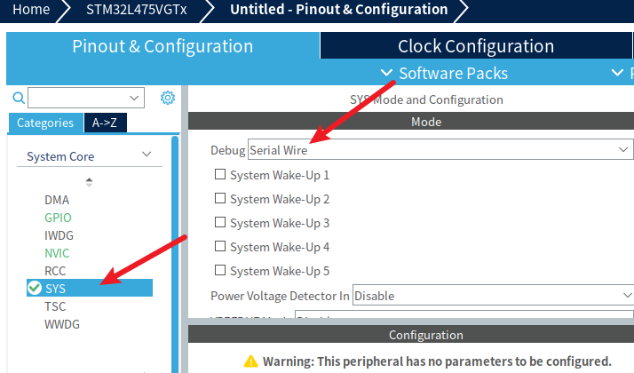
修改时钟配置，如图，由于开发板上的外部晶振是8MHz的，因此Input frequency选择为8MHz，该芯片的最大运行频率为80MHz，设置为最大频率。 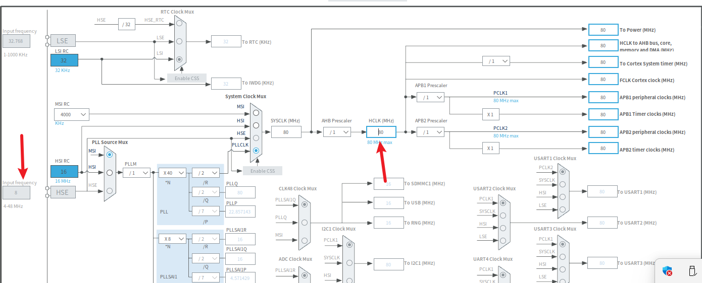
配置SPI3接口，如图，由于开发板上的wifi模块与stm32芯片的spi3引脚相连接，因此使用spi3接口。 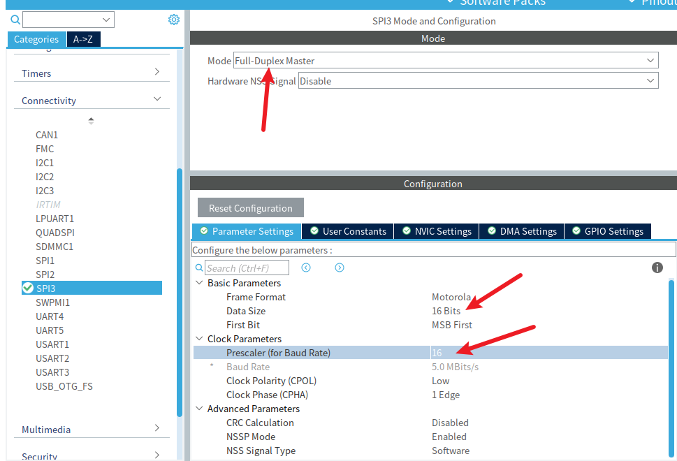
配置USART1串口，用于调试，异步模式，其余配置保持默认即可。 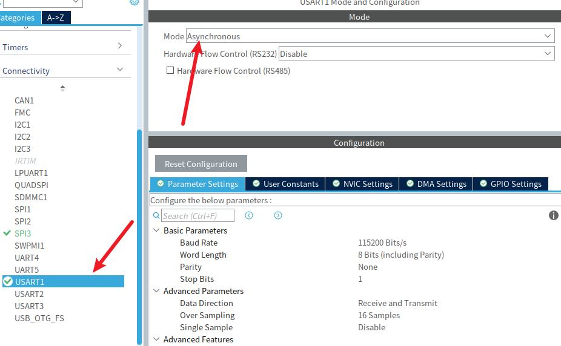 由于开发板上的USB调试口用的是PB6和PB7，在这里需要设置为相应的引脚。
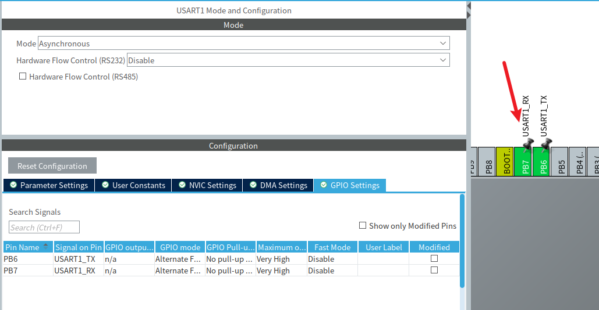
配置wifi的EXTI、CS、RST引脚（鼠标左键设置）。 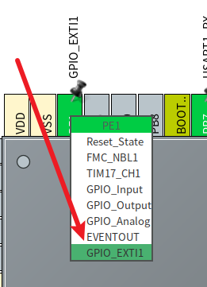 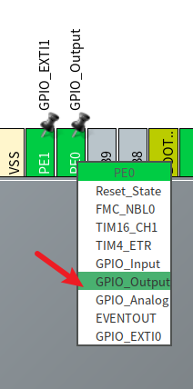 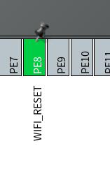
同时，为了方便辨识，为引脚设置特定的标识WIFI_CMD_DATA_READY和WIFI_NSS（鼠标右键设置）。 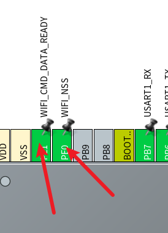
最后是这样子的，红色箭头上使能EXTI，也就是wifi模块需要用的EXTI。 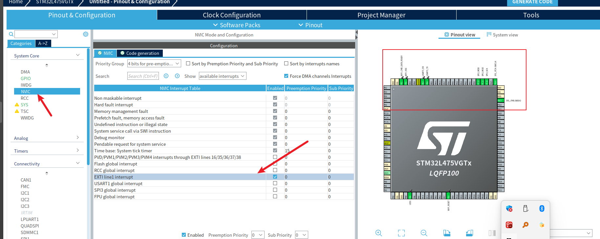
最后在Project Manager中的配置上跟之前的章节是一样的，配置好生成工程即可。
代码编写及运行结果#
新建wifi.c和wifi.h文件，这里会提示无法洞察。。。，需要重置缓存并重新加载项目 这两个文件主要是wifi模块和mqtt的相关代码 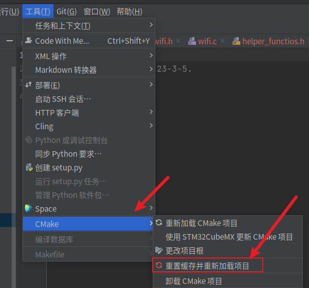
新建helper_functions.c和helper_functions.h文件 这两个文件可有可无，串口调试的功能
修改main.c中wifi信息和mqtt主题，id，ip地址
// 以下根据实际修改 char ssid[] = "luobo"; // wifi名称 char passphrase[] = "88888888"; // wifi密码 char subscribe_topic[] = "topic_s"; // mqtt订阅主题 char publish_topic[] = "topic_p"; // mqtt发布主题 char clientId[] = "STM32"; // 客户端ID
sprintf(hwifi.remoteIpAddress, "test.mosquitto.org"); // mqtt服务器ip地址，根据实际修改
编译下载代码后，等待开发板连接上wifi，就可以通过订阅/发布主题来互相通信。
这里使用MQTT X进行测试，首先需要安装MQTT X。
sudo snap install mqttx
这里先使用由 EMQ X Cloud 提供的公共 MQTT 服务进行快速测试：
Broker 地址: broker.emqx.io Broker TCP 端口: 1883 Broker SSL 端口: 8883
新建连接
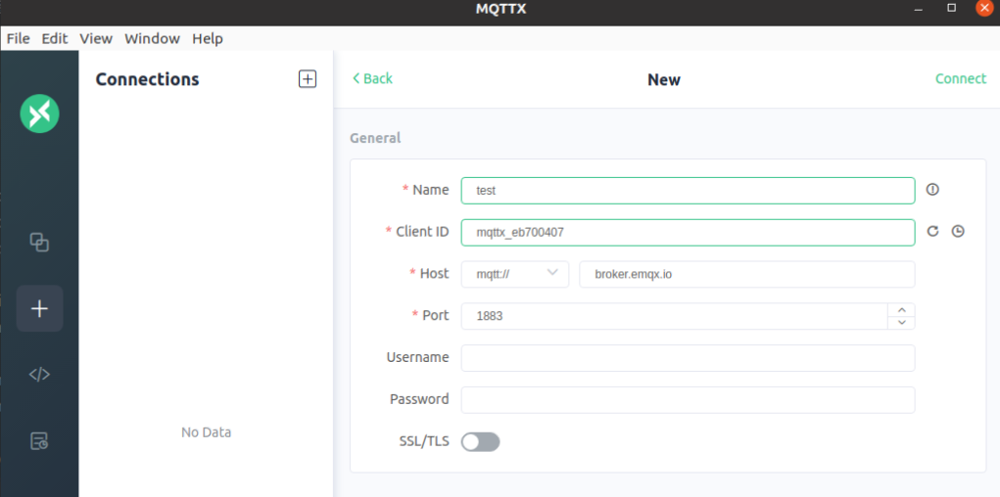
按照图中说明修改发布/订阅主题，即可通过客户端看到stm32发送过来的数据，stm32串口打印出客户端发送给stm32的数据。
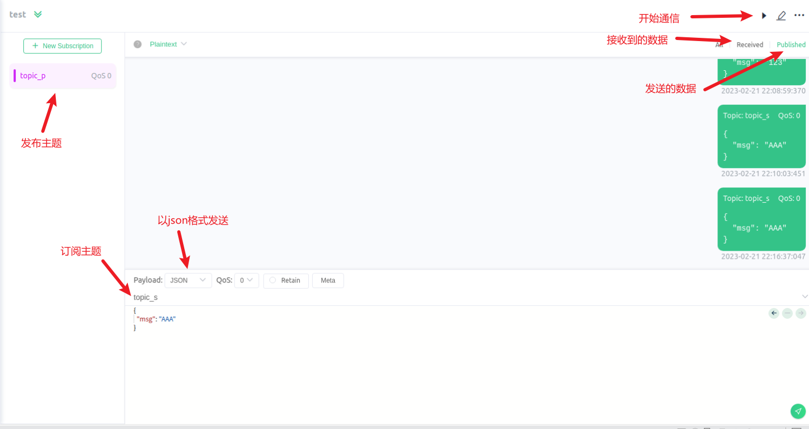
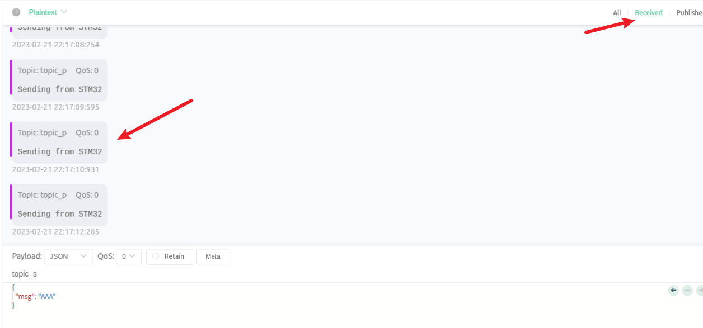
因为一般是以json格式发送或者接收，因此需要解析，比如发布者发送开灯命令“ON”，订阅者会接收到：
{ "msg": "ON" }然后就需要解析json格式，从中提取“ON”字符，用于控制LED灯的亮灭。有关json格式及其解析，使用C语言的有一个比较轻量的开源库名为cjson，详情请自行了解。
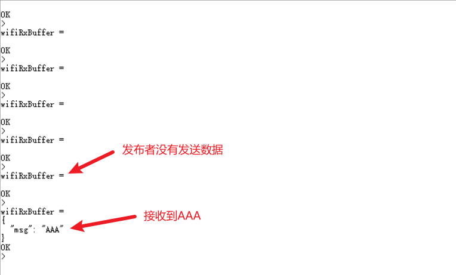
可以看到，通过支持MQTT AT的wifi模块使用MQTT是非常容易的。如果以后工作了，公司为了降低成本，用一些比较便宜的、不支持MQTT AT的wifi模块，就需要在TCP的基础上，按照MQTT的协议作一些包装，这就需要熟悉MQTT的报文格式了，详情请参考链接:link:MQTT协议中文版。又或者为了更进一步降低成本，公司直接使用wifi芯片，这就需要根据wifi芯片的数据手册来进行配置而不是通过AT指令，这种就可能需要自己实现TCP协议栈，更为复杂一些，但这样可以直接省下一个mcu及其外围电路。